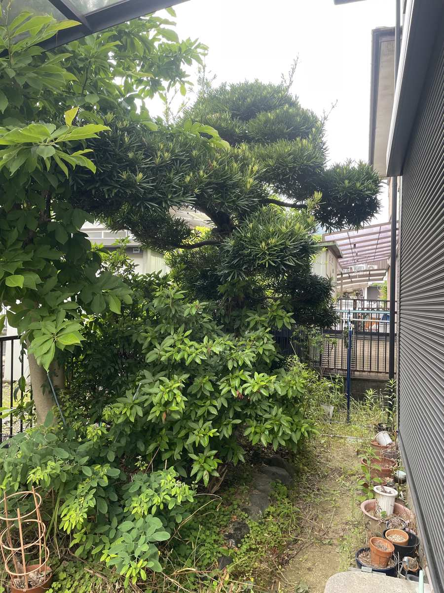
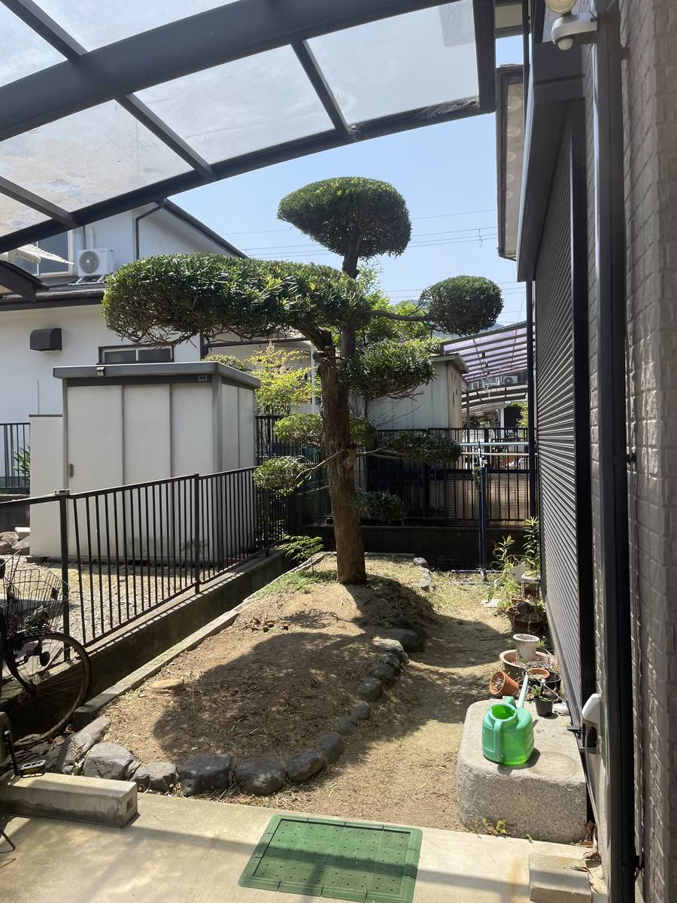
庭木の剪定｜マキの仕立て直し
伸び放題だった庭木を、玉散らしに仕立て直し。足元まで手を入れて、お庭全体がすっきり明るくなりました。
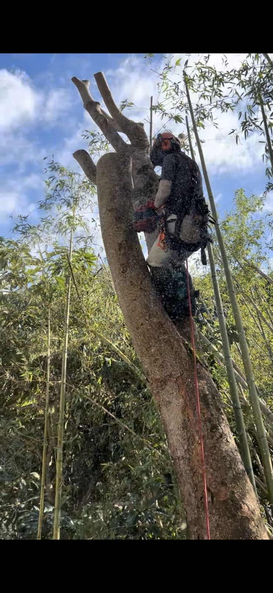
関西の造園・伐採・外構
関西の庭を、仲間と一貫して、
最後まで
見積りから作業・片付けまで、代表と仲間がすべて対応します。
すべて代表と仲間が対応(中間マージンなし)
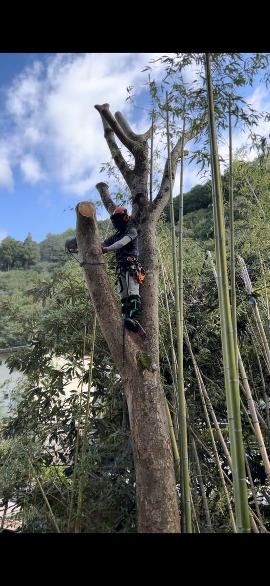
高所での特殊伐採の様子
造園歴8年(下積み含む)、2024年5月に独立してGood Gardenを立ち上げました。見積りから作業、後片付けまで、代表の私と信頼できる仲間だけで対応しています。下請けや中間マージンがない分、費用は作業そのものに還元でき、現場の様子もすべて把握した状態でお答えできます。
保有資格・修了教育
これらの資格により、高くて自分では手が届かない木の伐採(特殊伐採)にも対応できます。
現場に伺うと、「これ、切っていいの?」「これって危ないですか?」とよく聞かれます。ちょっとした判断のために、わざわざ人を呼ぶのは気が引ける──そんな声にこたえたくて、庭の状態をスマホで診断できるアプリ「庭ミル」を自分で開発しました。
ただし、危険が伴う作業や判断が難しいケースは、AIにまかせきりにせず、正直に人(プロ)へご相談いただく設計にしています。安全よりも便利さを優先することはしません。
ひとつでもあてはまったら、お気軽にご相談ください。


伸び放題だった庭木を、玉散らしに仕立て直し。足元まで手を入れて、お庭全体がすっきり明るくなりました。
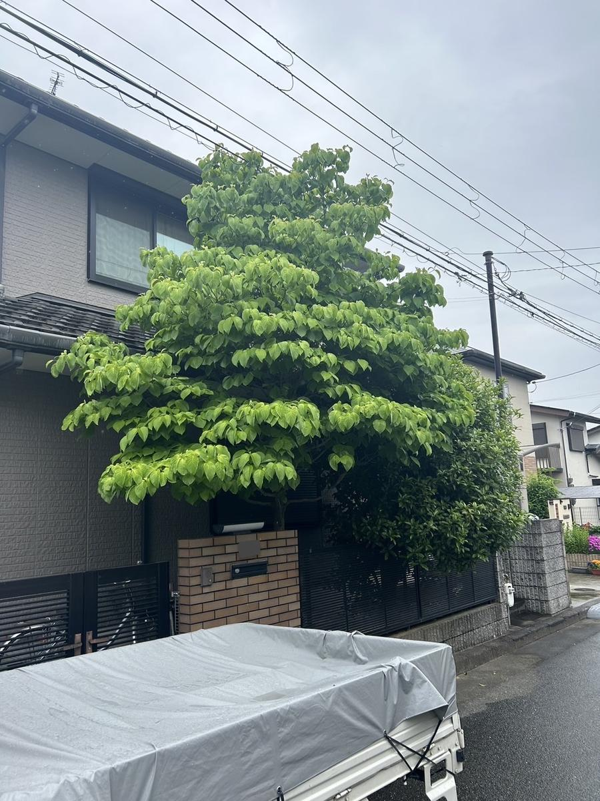
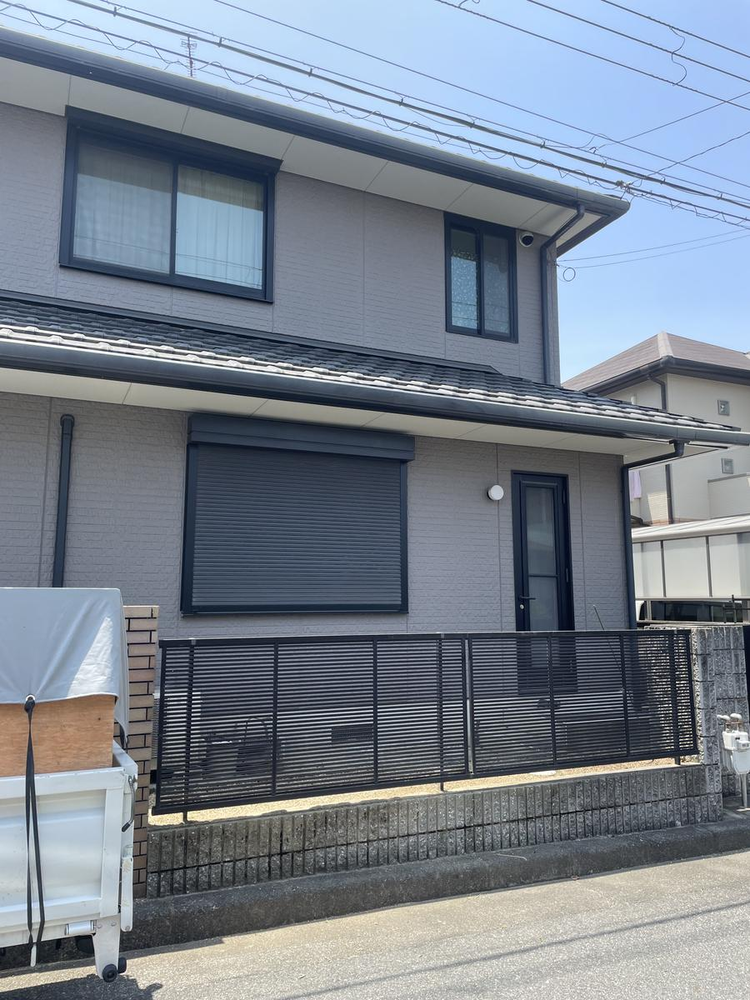
お住まいを覆うほど大きくなった木を伐採。日当たりと風通しが戻り、外観もすっきりしました。
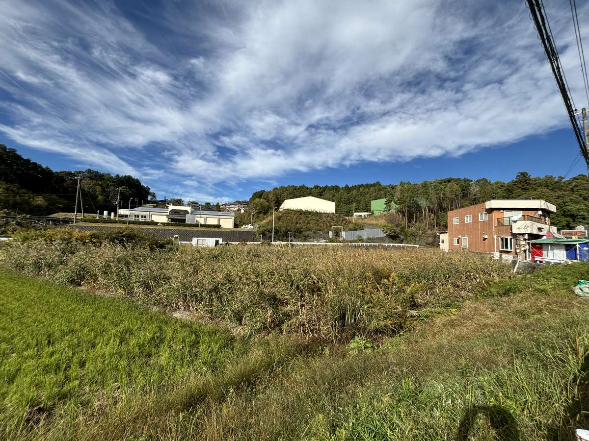
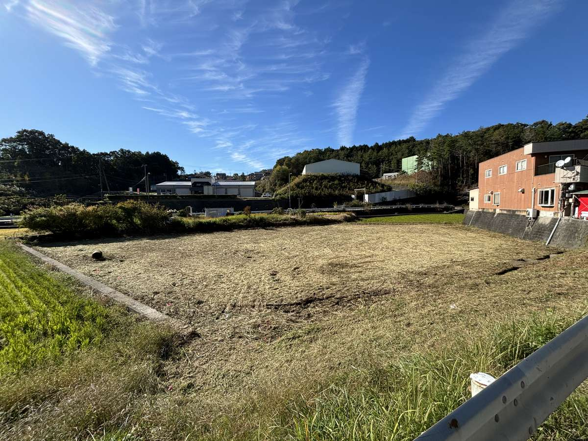
背丈ほどに伸びた雑草を、まるごと刈り取り整地。畑や田んぼの管理が難しくなった土地、相続して草だらけになった土地もご相談ください。太陽光設置前の下準備にも対応します。ラジコン式の草刈機も導入し、斜面や広い土地にも対応します。
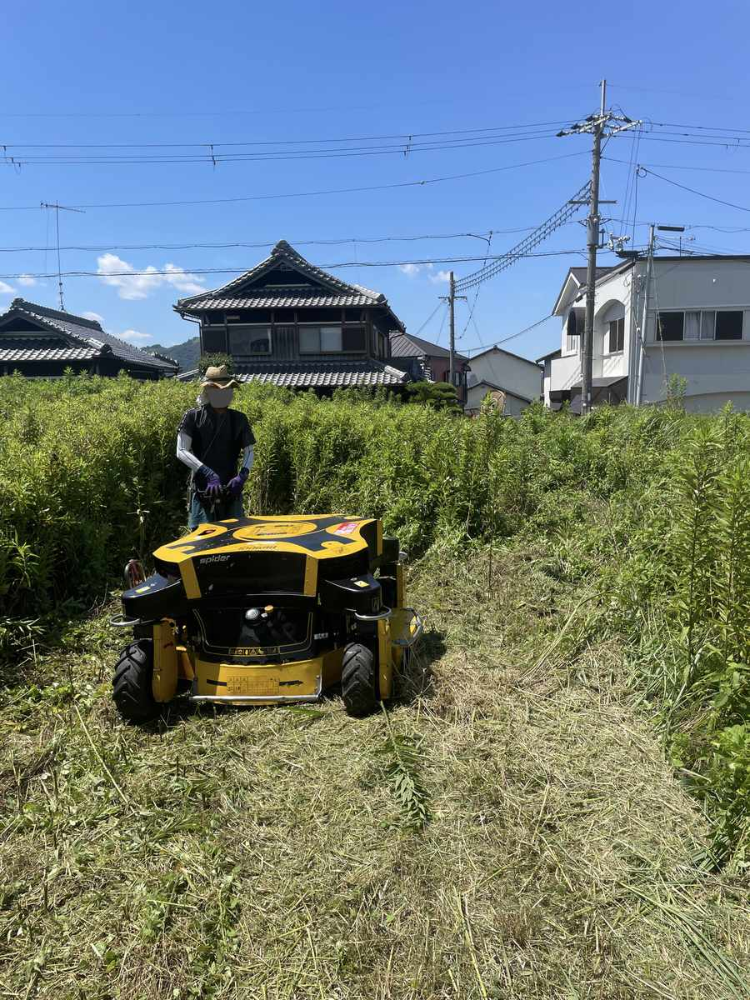
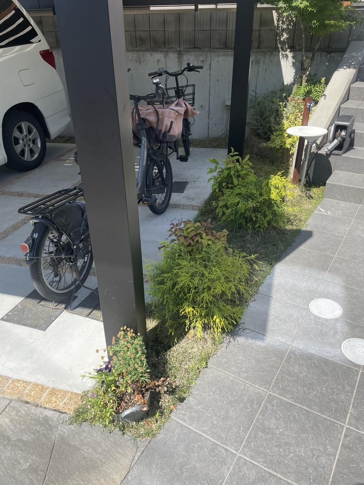
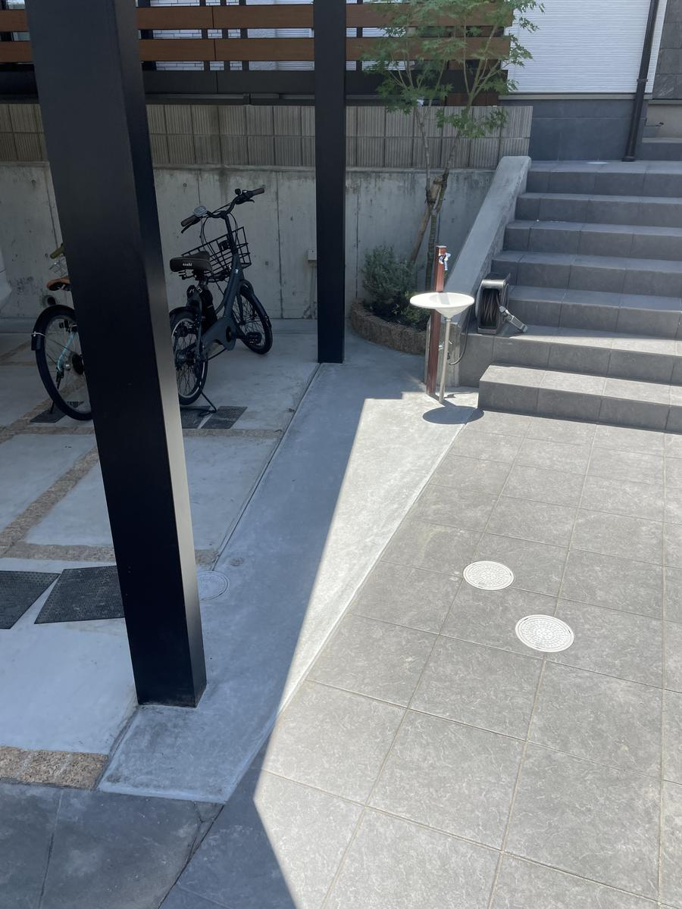
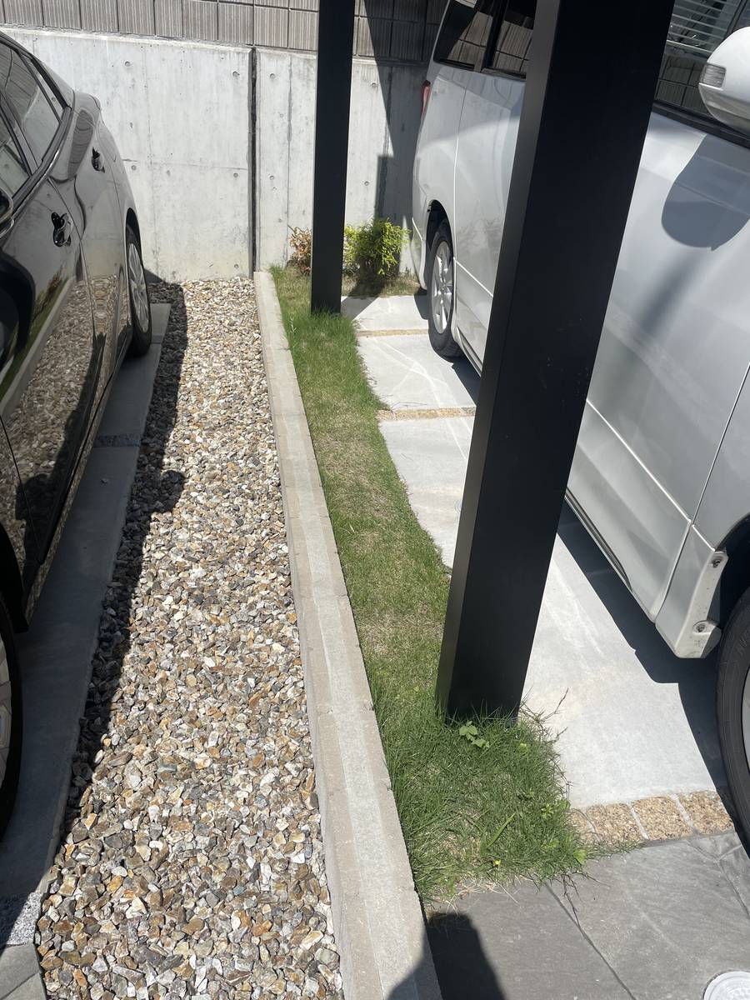
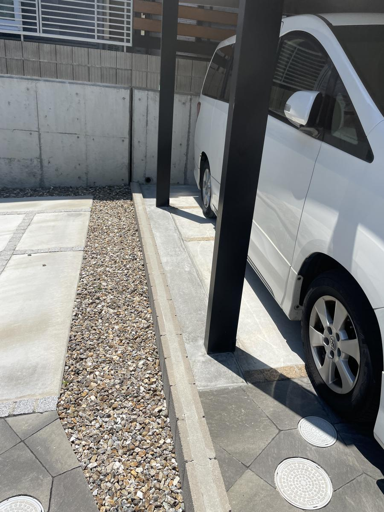
砂利敷きだったスペースを、タイルと化粧砂利でデザイン。モミジや立水栓も設え、車庫まわりがぐっと上質な印象に。
料金は木の高さ・本数・作業スペース・面積・処分量によって変わります。
必ず無料の現地見積りをしたうえで、金額をご提示します。
お見積り後に追加料金をいただくことはありません。
ご相談はフォーム・LINEからお気軽にどうぞ。通常1〜2営業日以内にご返信します。
フォーム・LINEのいずれかでご相談ください。
現地を拝見し、状況に合わせて最適な作業内容をご提案します。
内容にご納得いただいてから契約に進みます。お見積り後に追加料金が発生することはありません。
代表と仲間で、安全第一に丁寧に作業を行います。
片付けまで責任を持って行い、最後に仕上がりをご確認いただきます。
関西一円(大阪府・兵庫県・京都府・奈良県・滋賀県・和歌山県)に対応しています。
上記以外の地域もご相談ください。
もちろん可能です。庭木1本の剪定から承っております。
現地見積りは無料です。金額にご納得いただけない場合は、その場でお断りいただいて構いません。
ロープ高所作業特別教育・フルハーネス型墜落制止用器具特別教育を修了しており、高木や特殊な伐採にも対応しています。
はい、処分まで含めて対応いたします。
対応可能です。ラジコン式の草刈機も導入しており、斜面や広い土地にも対応できます。
はい。スクリーンショットを添えてご相談いただくと、より具体的なご案内ができます。
自宅を事業所としているため、住所は非公開とさせていただいております。ご了承ください。
| 屋号 | Good Garden |
|---|---|
| 代表者 | 西田 翔 |
| 創業 | 2024年5月 |
| 事業内容 | 庭木の剪定・伐採・特殊伐採・草刈り・除草・外構工事(土間コンクリート等) |
| 対応エリア | 関西一円 |
| 保有資格・修了教育 |
伐木等の業務に係る特別教育(チェーンソーによる伐木)修了 ロープ高所作業特別教育 修了 フルハーネス型墜落制止用器具特別教育 修了 |
| 連絡先 | お問い合わせフォーム / LINE |
庭ミルで診断した結果のスクリーンショットをお持ちの方は、LINEでお送りいただけると、より具体的なご案内ができます。
お写真を送りたい方は、LINEからお送りいただけます。
庭ミルの診断結果のスクリーンショットも、LINEで直接お送りいただけます。
お問い合わせありがとうございます。通常1〜2営業日以内にご返信いたします。